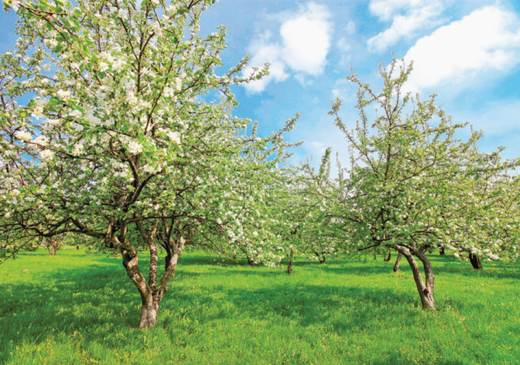
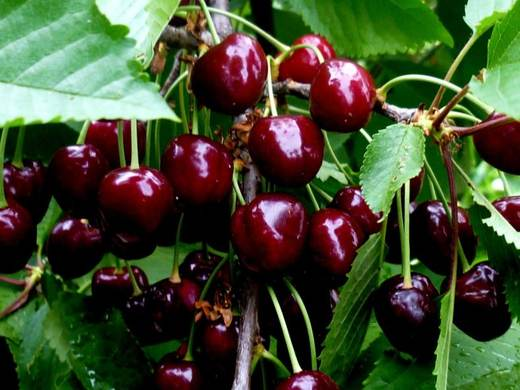
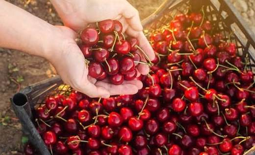
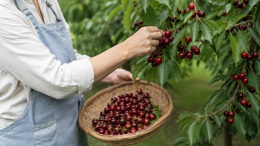
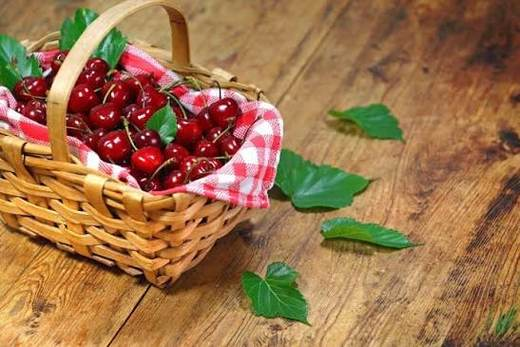

Пять вишен вдоль забора — первая линия сада. Пока сорта не определены: понаблюдайте за сроками созревания, размером и вкусом ягод — это поможет их опознать.





Клик по фото — полный размер. Фотографии иллюстрируют сорт/вид; собраны из открытых источников (питомники, сортовые каталоги, Википедия).
Вишня — одна из самых любимых культур русского сада. В вашем саду она высажена первой линией вдоль забора — 5 деревьев. Забор с северной стороны даже полезен: он прикрывает вишни от холодных ветров и накапливает тепло.
Типичные сорта средней полосы: Владимирская, Любская, Молодёжная, Тургеневка, Шубинка, Жуковская, Харитоновская, Морозовка. Чтобы определить свои сорта, обратите внимание: срок созревания (ранний/средний/поздний), размер и цвет ягоды (от светло-красной до почти чёрной), вкус (кислота/сладость), тип роста (кустовидный — пониклая крона, или древовидный — прямостоячая), плодоносит ли на приростах прошлого года.
| Посадка | весна (апрель) предпочтительна; контейнерные — с апреля по октябрь |
| Место | солнце, возвышенность, грунтовые воды не выше 1,5–2 м |
| Расстояние | 3–4 м между деревьями |
| Посадочная яма | 60–70 см глубиной, 60–80 см диаметром |
| Кислотность | pH 6,5–7 — кислые почвы известкуют (доломитовая мука) |
| Урожай | 8–20 кг со взрослого дерева |
Советы собраны из отзывов садоводов на форумах и из практики питомников; цитаты приведены по источникам ниже.